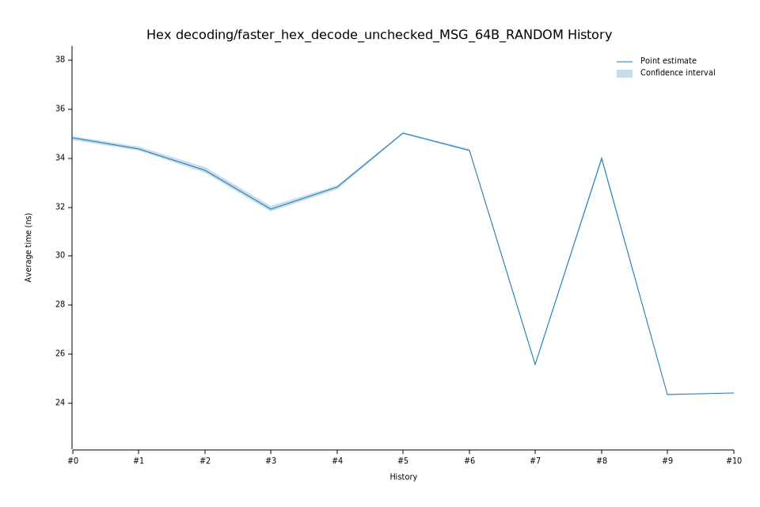

# 42023-02-09T13:12:00Z
|
Lower Bound |
Estimate |
Upper Bound |
| Value: |
32.74ns |
32.82ns |
32.89ns |
| Change in Value: |
+2.3732% |
+2.8215% |
+3.2954% |
No change in performance detected.
# 32023-02-08T19:19:54Z
|
Lower Bound |
Estimate |
Upper Bound |
| Value: |
31.83ns |
31.93ns |
32.04ns |
| Change in Value: |
-5.1154% |
-4.7024% |
-4.2918% |
No change in performance detected.
# 22022-12-05T09:07:28Z
|
Lower Bound |
Estimate |
Upper Bound |
| Value: |
33.41ns |
33.52ns |
33.63ns |
| Change in Value: |
-2.8167% |
-2.4774% |
-2.0796% |
No change in performance detected.
# 12022-11-14T12:22:59Z
|
Lower Bound |
Estimate |
Upper Bound |
| Value: |
34.32ns |
34.39ns |
34.46ns |
| Change in Value: |
-1.3823% |
-1.0947% |
-0.7877% |
No change in performance detected.
# 02022-11-04T13:59:52Z
|
Lower Bound |
Estimate |
Upper Bound |
| Value: |
34.72ns |
34.81ns |
34.89ns |